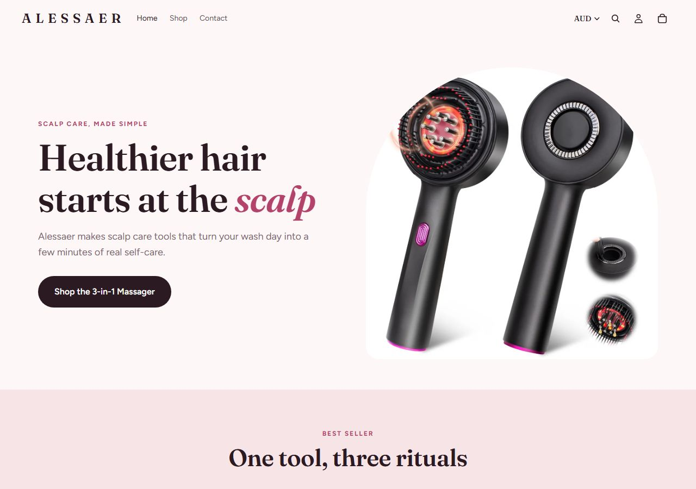

alessaer.com MODELAR referencia_mercado_au
Copie: Prova de demanda em AUD: o nicho está se abrindo na Austrália em outubro/2026. Não copie: Produto é manual (sem vibração elétrica), diferente do nosso.O que o veredito cobre: Prova de demanda em moeda local AUD, canal Meta Ads, produto diferente do nosso (manual, sem vibração elétrica).
01Produto campeão

Alessaer™ 3-in-1 Scalp Massager
Único produto da loja. LED scalp massager manual com dispensador de óleo recarregável e terapia de luz vermelha. SKU CJYD217870501AZ / CJYD217870502BY (CJ Dropshipping confirmado). observado
O que vem: Dispenser de óleo com pontas metálicas para aplicação direta nas raízes + LEDs de luz vermelha integrados.
Escada de oferta observada (order bump, upsell e pacotes)
| Degrau | O que é | Preço | Evidência |
|---|---|---|---|
| Core | Alessaer 3-in-1 Scalp Massager (LED + dispenser de óleo) | A$ 79,99 | Produto único, ticket AUD$79.99 (de AUD$99.99) |
02Mídia paga
| Ritmo de criativo | Valor | Leitura |
|---|---|---|
| criativos únicos observados | sem rolagem não obtidosem leitura de rolagem | amostra, não o total de criativos da loja |
| duplicação (mesmo texto, vários anúncios) | sem leitura de textos repetidos não obtidoesta loja não entrou na leitura de texto da análise de anúncios | quanto o mesmo texto é reaproveitado com mídias diferentes |
| cadência por dia | sem série diária não obtidoa Biblioteca pública não entrega a data de cada anúncio da amostra inteira; a rolagem tem teto de 500 e ordena por recência | não extrapolar uma cadência: seria número inventado |
| longevidade máxima | 1 dias | piso: o anúncio mais antigo pode estar fora da amostra |
| anúncios com 60 dias ou mais | 0 (o mais antigo tem 1 dias) | anúncio que fica mais de 60 dias no ar costuma ser anúncio que se paga; isso não prova lucro |
| mix de formato | sem leitura não obtidosem mix lido |
Criativo campeão desta loja
Nenhum dos 10 criativos mais escalados do mercado é desta loja. O anúncio ativo mais antigo dela tem 1 dias (piso) e a leitura de criativo abaixo vem dos ângulos observados.
03Tráfego real
04Faturamento mensal estimado
Benchmark de custo do setor: CPM, CPC e CPA por anunciante não existem como dado público. O ROAS não é mostrado: sairia da mesma conta e daria o mesmo número em qualquer loja.
05Páginas capturadas
No celular
06Anatomia do vencedor inferido
Ângulos ativos observados
| # | Ângulo e prova |
|---|---|
| 1 | autocuidado / spa em casa |
| 2 | rotina de shampoo elevada |
| 3 | red light therapy para queda capilar |
07Catálogo, oferta e identificação
- Plataforma
- Shopify (CJ Dropshipping, SKU CJYD217870501AZ confirmado)
- Apps
- não obtidoapps não lidos
- Pixel Meta
- não obtidonenhuma fonte desta pesquisa traz o pixel da loja
- Catálogo
- 1 produtos lidos; preço mediano do catálogo AUD 79,99. 1 produto. Loja lançada em 07/10/2026.
- Frete
- não lido nesta pesquisa
- Garantia
- não lida nesta pesquisa
- Prazo e BNPL
- não lido nesta pesquisa · nenhum parcelamento (BNPL) detectado nos meios de pagamento lidos
- Meios de pagamento
- Shopify Payments (AUD); inferred
- Reviews
- não obtidoavaliações não lidas
- Redes
- não obtidorede social não coletada neste levantamento
- Origem provável
- AU
- Domínio
- · Tranco: não lido
- Prova de demanda em AUD: o nicho está se abrindo na Austrália em outubro/2026
- Ticket AUD$79.99 (de AUD$99.99) com 20% de desconto como âncora
- Produto 3-em-1 como proposta de valor (massagem + óleo + LED em 1 ferramenta)
- Ângulo de rotina de shampoo elevada (spa em casa)
- Produto é manual (sem vibração elétrica), diferente do nosso
- Loja com apenas 1 produto e 2 dias de vida: sem prova de conversão ainda
- AU tem menos histórico que UK (The Care Co. tem 15 anúncios vs 5 da Alessaer)
08Dados não obtidos
| Dado | Motivo | Método tentado |
|---|---|---|
| Tráfego SimilarWeb | Loja criada em 07/10/2026, sem histórico suficiente. Apify retornou array vazio. | Apify vortex_data~similarweb-scraper |
| Faturamento estimado | Tráfego não medido | SimilarWeb indisponível |
| Data do primeiro produto no products.json | Loja nova, apenas 1 produto registrado | products.json?limit=5 |
| Pixel da Meta | nenhuma fonte desta pesquisa identifica o pixel da loja | leitura pública do HTML e dos apps; sem inspeção de navegador |
| CPM, CPC e CPA desta loja | a Meta não publica custo por anunciante | Biblioteca de Anúncios pública |
| Valor investido em anúncios e impressões | a Meta só publica gasto de anúncio político; alcance só na União Europeia | API oficial e Biblioteca pública |